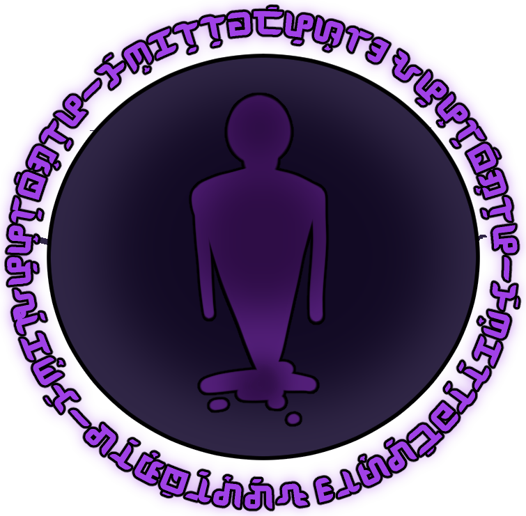
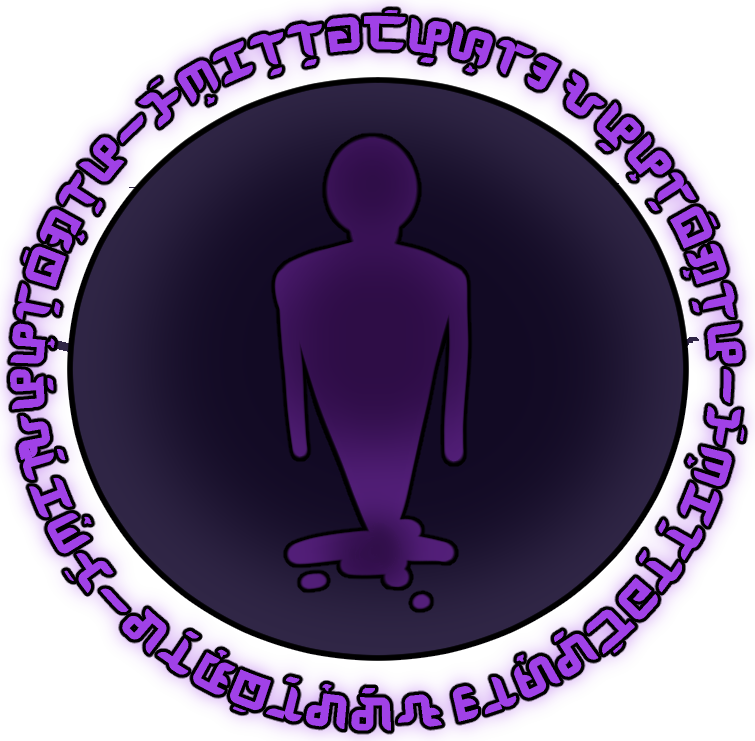

Humans range heavily in height, skin tone and aptitude. Equal chance of any aptitudes. A lot of humans have mixed ancestry without knowing, as it’s usually so distant there’s no noticeable effect.
Elves, also called Common Elves have a similar appearance to humans; however, they have long, pointy ears. All Elves tend to live multiple centuries, and they mature much slower than humans. Some Elves age like a regular human and then plateau after finishing puberty, while some Elves just mature very slowly in general. Because of their long lifespan, Elves are usually uncommon as a result of their low fertility rates. They tend towards light and earth aptitudes, but others aren’t uncommon.
Forest Elves are actually the original species of elves, but they almost always reside in the Forest of Beginnings. They tend to have ears that look somewhat akin to leaves, and their bodies tend to be more durable than others. They still tend towards the earth aptitude, but prefer water rather than light.
Dark Elves are typically found on the continent of Mulqir. Their main differences from Common and Forest elves is their demon hybrid traits, and unnatural eye and hair colors. While other elves vary in complexion, dark elves always have darker skin tones. Dark Elves became a subspecies due to a few Elves having a higher genetic disposition to demon hybrid traits, leading to demon traits always presenting even with the smallest amount of blood. This continued on through generations, aiding to a new subspecies. They are named after their strong likelihood of having the dark aptitude, with wind being secondarily common.
Dwarves, also called Mountain Dwarves, look like extremely short and hairy humans, often having large beards and stocky bodies. All Dwarves' lifespans reach beyond a century, and they mature slightly slower than humans. They tend towards earth and fire, but others aren’t uncommon.
There is also a subspecies of Dwarf that occurs in Himminbjörg named Ice Dwarves. They have blue skin, and tend towards the arts rather than smithing. They still tend towards the earth aptitude, but prefer water rather than fire.
Another subspecies, occurring in the Northern Dwarven Tribes, is called the Rock Dwarves. Called as such due to their tougher than average skin, with the same aptitude inclination as Mountain Dwarves. They tend towards earth and fire.
Harpies tend to have wings and feathers while also being capable of flight. Therefore, they tend heavily towards a wind aptitude. They have mild eyesight issues, as they have trouble seeing glass.
The Wyav are one of the only species with their Forgotten Tongue name preserved. Wyav translates to "wild", and they are referred to by this as they tend to have animalistic traits. Lizard scales, wolf ears, cat claws and rat tails are just some examples of traits they have. Wyav are found all over the world, in cities or forests or deserts, and their family and societal structures can be just as varied. The aptitudes they are born with are just as random as a human’s and do not seem to have any correlation with their animal, though such coincidences are not unheard of. This is the primary way a Wyav is distinguished from Half-Dragons, Harpies, or the like. Wyav can have children with any other Wyav, and even other species, and the type depends on the parents. If there is only one Wyav parent, the child will either inherit all traits or partial traits from the Wyav parent. If both parents are Wyav, it is dependent on the species. For example, a Tiger Wyav and a Bear Wyav would produce either Bear or Tiger Wyavs, but a dog and a wolf would have the potential for a Wolf-Dog Wyav.
Minotaurs are creatures with the top half of a bull or cow and the lower half of a human. In the current age, pureblood minotaurs aren’t very common and usually exist through the form of hybrids. Hybrids tend to have cattle-like features such as a tail, horns, fur, and other traits depending on the person. Even a small amount of minotaur, as little as 1/64th, could still present features. They vary in height but are generally at least a bit taller than humans and stronger than them as well. In addition, they tend to have an earth aptitude and find learning spells outside their aptitude harder than usual. Usually those with minotaur blood are 1/16th.
Demons have only persisted in the form of hybrids. Hybrids tend to have bat-like wings, horns or tails. They can also be called Tieflings. Demon blood is very strong, and even the common 1/64th ancestry will still show traits. Some extremely rich families manage to maintain a 1/16th bloodline, through controversial methods such as arranged marriages or experimental gene editing.
Half-Dragons tend to be strong and scaly and have claws, wings, fangs and/or slit pupil eyes. They have dedicated organs for fire breathing, like the surviving Fire Dragons, and they tend towards the aptitudes that their other halves usually do.
Half-Drakes, or Half-Earth Dragons, are wingless variants of dragons. They tend to be physically stronger and larger, though they’re unable to exhale any element.
Water Dragon Hybrids are a special case, compared to the other two. They’re equally wingless as Drakes, though they possess magical flight and are magically stronger. They’re very serpentine in comparison to dragons and drakes. They’re also similar to demons, with Water Dragons and Half-Water Dragons being rarer, but still showing traits in faint bloodlines, commonly 1/16th. They used to exist mainly in Zhōngxīn, with small populations on other continents, but their population died off after the War. Typically their tails are furry, their horns are similar to antlers, and they can breathe underwater. Despite this, they’re physically no stronger than their peers. They often have the Water aptitude.
Changelings are one of the Ancient War's only surviving fairies/fae. Changelings are noted to have remarkable shape-shifting powers. Their powers work differently from magic, in which it is directly ingrained in their genetics. Changelings essentially have access to every single gene that dictates one’s characteristics and they simply choose to turn those genes off or on. Even if a Changeling shifts their appearance to something completely different from their default, their DNA is still the same pre-transformation and post-transformation. As a result of their incredible powers, pre-Ancient War Changelings would often swap other species’ children with a changeling child. It’s unknown why they did this, but the practice has fallen immensely out of style in the modern day. Changelings are born blind and start off as blank slates, but they copy the first person they see and that remains their default until death. This includes the copying of one’s sex, although Changelings have the ability to change this for themselves when they want, becoming their default. They cannot, however, transform parts of their default appearance through their shape-shifting powers (hair color, skin color, eye color, eye shape, etc.)
Wulvers are one of the only fairies/fae to survive the Ancient War. Wulvers were never very populous, and, as such, they had never participated in the war. They are often mistaken for werewolves due to having the head of a wolf, but they are not related. The primary way to discern a werewolf from a Wulver is that a werewolf completely transforms, whereas a Wulver only has a wolf's head and sometimes neck. They also have the body of a human. Wulvers are noted to have extreme amounts of luck in fishing and natural skill with hiding.
Half-Monsters are an infrequent occurrence where an intelligent species produces offspring with a monster species. Some are more common than others, such as werewolf and Vampire hybrids, but pretty much any monster can produce a hybrid offspring. The Half-Monster tends towards their monster parent's aptitude if the parent has one.
Monsters are a generalization for, generally, aggressive species. They are usually differentiated from other animals by the prescience of magic and/or high aggression. Most countries have passed monster extermination laws, allowing the killing of monsters. Depending on the country, Half-Monsters are sometimes included, but the killing of Half-Monsters is outlawed in Blaluzaic. Listed here are some examples of monsters.
Also called Lycanthropes or Lycans, they are caused by a contagious curse that is spread through being bitten by a transformed Lycanthrope or being the child of one. Lycanthropes generally appear as regular members of an intelligent species, but they will then transform into a humanoid beast on the full moon and seek out the hearts of their own species to feast upon. Every time they transform, they slowly lose themselves more and more until they are completely lost, at which point they can transform freely. Unfortunately, there is no known cure or counterspell for the Lycanthropy curse. There are two known “types” of Lycanthropes, each corresponding to the different moons. Type ones change when Zaihl is full and type twos change when Maiw is full. This leads to disproportionate rates of transformation, since Zaihl takes about fifty-seven days to go through its cycle whereas Maiw only takes 17 days to go through its cycle, leading to Type twos transforming much more often than Type ones. This also means there is a period in which both moons are full, and all Lycanthropes transform at the same time. In some mythologies there appears a third type that only transforms when both moons are full, but most text on the phenomenon has been lost. Not only that, but there is also no recent record of this occurring, meaning it either is purely fiction, or the type has long been extinct. Due to the purifying effects of silver, said metal has a negative effect for werecreatures, ranging from pain and anxiety all the way to death. Not a playable species.
Reapers are a theorized monster that people close to death have reported. Those close to death have reported Reapers as being humanoids of ranging appearance and species and typically wielding a scythe. It is theorized they transport souls of the dead to the afterlife. Not a playable species.
Jinn are a theorized species who reside in the continent of Mulqir. They're invisible spirits that generally do not live within cities, only abandoned places. Although, there's a very strong belief in evil jinn, that can take over people's bodies in times of mental weakness. They're also frequently featured as antagonists in horror media produced in the region. Not a playable species.
Elementals are, essentially, living manifestations of an element. They correspond to all six elements, and how they reproduce is unknown. It is, however, clear that they are not the result of a spell. Not a playable species.
Griffins are creatures with the head, front legs and wings of an Eagle and the body of a lion that utilizes wind magic. They are more varied than dragons. Some are hyper-aggressive and attack people, while others are pacifistic. It is currently hotly debated in Blaluzaic whether they should still be considered monsters or should be removed from the classification like dragons. Not a playable species.
Like Lycanthropes, vampires are either born via a contagious curse that is acquired through blood transmission or being born one. In Blaluzaic a majority of them are not hyper-aggressive, so while still classified as a monster, they are given the same protections and rights as the other intelligent species. Vampires sometimes tend to have eyes unnatural for their species, and they have fangs. When abstaining from blood, a week is usually enough to cause them a large amount of hunger pains and volatile emotions, and, after a month, their instinct will kick in and they will begin lashing out. They typically live a long time, their aging slowing around 20~, and have enhanced senses. Due to the purifying effects of silver, vampires do not have a reflection in silver backed mirrors, and silver causes them enhanced pain when they are cut with it.
Gorgons are a species of ugly humanoid snakes. With a monstrous face that freezes beings into stone upon meeting their gaze, they prey upon intelligent species as a food source, eating the very stone they turn people into. If one is with others who manage to protect them, the petrification wears off after 5 hours, but once a Gorgon bites a chunk out, they are doomed to stay like that forever, being aware of everything but unable to do anything.
While bearing similarities to harpies, they are not considered the same. Sirens are avian-looking monsters with feathered arms, bird feet, and the ability to fly. They enjoy staying in precarious places and singing about passing people’s desires to lull them into a trance and lure them in the direction of the siren. Once they approach, the siren will kill them, feast on them or scavenge their body if they die along the way.
Banshees are distantly related to sirens. Unlike sirens, however, banshees look like disheveled old people and are generally given protection in most countries, as they do not generally harm others. They possess a form of future sight and life force detection, sensing the potential fates of a passing person’s loved ones. If one of their loved ones is likely to die, the banshee will begin wailing, weeping and keening a mourning song.
Hellbeasts look like extremely deformed versions of humans, elves, dwarves, etc. and various animals and sometimes even other monsters. They form due to excess amounts of mana in an area, and they attack indiscriminately. They drop materials that are used for potion making and alchemy.
Homunculi are powerful artificial humans made from clay, mud, etc. and given life. The process of creation is extremely complicated, to the point it’s nearly impossible. The spells and processes needed to create them are well guarded, and, even when the steps are applied, all homunculi created seem to be missing a key aspect of themselves. It varies from each individual, but it is always major and often leads to their death. It is theorized that an important step is missing, and, as such, homunculus creation is illegal in most countries. The homunculus is considered its own being once it is formed, so any that are created illegally usually become wards of the state, with the creator being put to death. Not a playable species.
First, to use magic, one must study intensely or be born with an aptitude. Having an aptitude refers to being born with the natural ability to use one of the magical elements. Spells tend to come more naturally and require less effort and energy to learn and cast, and, in extreme cases, a prodigy with an aptitude will accidentally cast magic on their own. Beings are usually only born with one aptitude, but two is not unheard of. However, three and higher are generally rare. The exact percentages are 15% of the population have no magic, 15% have no aptitude, 40% have one aptitude, 15% have two, 10% have three, 3% have four and 2% have five. Having six aptitudes is extremely extremely rare, to the point it’s usually not factored into the old percentages.
One can cast magic that does not fall under their aptitude. However, this generally requires much more effort and energy, and the finer details of a spell can often elude those without an aptitude.
There are many ways to test for one's aptitude. The primary three are:
While anyone can cast magic without a medium, casting becomes much more challenging once you move outside of your aptitude. For example, the spell could not work or even backfire onto the caster. For example, someone with a fire aptitude would find casting wind magic much easier if they channel their spells through a medium, and much less likely to blast them in the face. Many different mediums are used, like wands and staves and runes and even tattoos, and students are encouraged to find the one that matches them the best.
Magic is generally categorized into six elements for which intelligent species tend to have an aptitude. There are other miscellaneous categories, but they are often not found in professional settings. The six core magic elements are fire, wind, earth, water, light and dark magic.
The ability to manipulate fire, heat and energy. Spells can range from easy, like a single flame, to highly advanced, like a torrent of fire.
The ability to manipulate the form, shape, consistency and temperature of both existing and created water. One could potentially form a whip out of water or a torrent of ice projectiles.
The ability to manipulate the shape, consistency and even individual grains of sand from the ground and rock. One could form a knife from rock or even draw metal from rocks and the earth.
Also called Air magic, it is the ability to manipulate the air, from blasts of air to separating the individual periodic elements out of the air.
Light magic is not literal; it is not just the ability to manipulate light. It more so refers to the nature of a grouping of magics. Light magic typically also covers summoning, life, healing and many more, resulting from combinations with other magics, which will be covered later.
Dark magic is much like light magic in that it is not just magic covering literal darkness. Dark magic also covers heavily destructive magic, death, and the banned act of cursing other beings.
Magic elements can also be combined into more specific concepts. For example, one could combine fire and wind magic to create lightning. Then lightning further branches off into the more docile electrical magic, often used to generate power for electronics, especially if an area does not have many natural resources.
To use combination magic, one needs to have at least a moderate comprehension of the magics that goes into it. It is generally recommended to have an aptitude in at least one of them to have the easiest time learning the combination magic. Listed hereafter are just some examples of combination and sub-magics, and they are not comprehensive. Feel free to ask staff about any magic you are thinking of using if you need help discerning what magics it would be a combination of.
A combination of fire and wind magic. It is self-explanatory, as it generates large amounts of electricity that burn flesh and can start fires.
A docile version of lightning magic that is often used to generate power for electronics, especially if an area lacks natural resources.
The ability to increase physical traits (flexibility, strength, speed, etc.) via light and fire magic.
The ability to generate life is highly complex magic. For example, even just producing a single flower can be difficult, requiring knowledge of light, earth, water and fire magics.
While regular summoning magic can summon creatures without any sort of natural aptitude, elemental summoning focuses on creatures with elemental properties. For example, summoning an Ifrit with light and fire magic, summoning a golem with light and earth magic, or even combining light, wind and fire to summon a phoenix. It only requires a mild amount of knowledge in the secondary element, but the more the caster knows, the stronger creatures they can summon.
Binding Contracts, whether you consciously or accidentally make one, makes it easier for you to summon a creature to you. This is the main basis when forming contracts with familiars. Before making the contract, you either need to have met the creature itself out in the world or performed a summoning (an elemental summoning or regular summoning.) The contract can do and contain various things, including the power split between the parties, the extending or sharing of lifespans, and other clauses that may be contained within it. The process is very flexible and can contain any clauses, but in order for it to be considered a binding contract, it must be made with magic.
When a contract is made, there is a mana drain from you, although it can vary how much is taken from you depending on the conditions of the contract and the strength of the familiar/creature. Every subsequent summoning of said creature will also drain you of mana. When the creature is not summoned (imagine it like running a program in the background) there will be a minimal mana drain for most cases, but it can obviously vary. The contract must also be made with the consent of both parties. The power boost you obtain from a familiar only applies when you summon them. In order for a contract to be voided, the parties involved in the contract need to agree to end it or there was already a stipulated time when the contract was first made and it has been exceeded. If there is none, contracts are automatically “death do us part.”
Anything and anybody can enter a contract and be considered someone’s familiar, so long as they have consented. The Binding Contract cannot distinguish if someone was forced to consent or not
Enchantment is considered a sub-magic of elemental summoning, which gives ordinary objects magical properties. More advanced enchantments usually require more powerful conduits, like precious metals or stones. Enchantment is further divided into two categories: Direct Enchantment and Storage Enchantment. Direct Enchantment is generally easier, and it is performed by pushing your magic into an object at a constant rate, meaning the enchantment ends when the magic is no longer supplied. Storage enchantment is performed by putting magic into some type of storage conduit, usually a precious gem or metal, and keeping it there to use later.
Usually, a secondary enchantment is placed on the stone that allows it to absorb magic from the environment, otherwise it needs to be recharged every so often.
Combining wind and water magic enables one to whip ice and water around, enabling the creation and control of natural phenomena like snowstorms, blizzards, hailstorms and the like, instead of just blasts of snow and hail.
A magic creating empty husks that essentially serve as short-lived puppets. It uses a combination of dark, earth and water magic to create the husk, and the general properties of it are up to the caster. The caster can usually see through the eyes of the husk and manipulate its movements quite dexterously. More advanced users of husk magic can create multiple husks at once or sometimes even give them elemental properties.
A magic that is heavily looked down upon. It is a combination of dark, light and earth magic. Students are allowed to study this magic, though it is highly recommended they do not practice on anything that isn't a corpse that has been donated to the school.
A combination of fire and dark magic. It uses dark magic to empower the fire and create explosions in their environment. It is simple magic, often the first magic recommended to a fire user looking into combination magics.
Curses are a result of someone being afflicted with 'bad' magic. There are three known ways to acquire a curse: either being afflicted with one via dark magic, being unlucky and being born with one or being near an area well-known for having wild magic during pregnancy or birth.
Curses have many different effects and can range in severity.
There also exists the classification system called The International Standardized Curse Classification System— also called the OIC— which stands for Origin, Impact, and Cure. It is used to identify curses as well as their attempts to dispel said curses. Not everyone in the world who has a curse has an assigned OIC, but any student with a curse receives an OIC upon being accepted.
A yellow dwarf named after a mythological sun deity. It provides all the heat energy in our small solar system.
The only planet between Gaol and Maith is a small, dark gray planet with a somewhat thick atmosphere named after a death deity. Observation of the planet shows it is covered in craters and has lava lakes. It has no known moons.
Next is the home to all life we know of, of which none have stepped off the planet yet. Maith is named after a goddess of life and is about 64% ocean, 34% land and 2% freshwater. It has 3 moons orbiting it that influence the tides. Well, technically, it has 2 moons, one of which has an asteroid orbiting it.
Named after one of the sons of goddess Maith, Zaihl is a relatively large moon with about as thick of an atmosphere as Maith does. However, it is assumed that no life exists on the moon, as there are no colors besides the brown and gray rocks and the murky water on the surface.
Named after one of Zaihl’s sons, Zaiisu is a large asteroid that Zaihl’s gravity has long captured. It is assumed to have come from the asteroid belt surrounding our solar system. It is often referred to the “moon of the moon.”
Named after one of the daughters of Maith, Maiw is a small moon that rotates on its side with no atmosphere present and many craters. It has an enormous crater on the North Pole, Which is assumed to be from a large asteroid impact that is the reason for the moon’s 78° axis angle.
Named after one of the pixies that assisted Flluaguan in learning light magic, this off-white dwarf planet has an almost non-existent atmosphere and is also covered in craters.
Named after one of the giant Smithing Gods of mythology, this blue gas giant has many, many asteroids and small moons orbiting it, so many that naming all of them would take very, very long. As it is the second largest object in the solar system, the other planet’s orbits can vary slightly, depending on where it is in its orbit.
An asteroid belt named after the divine slag and waste Smithing God Clauw would throw from his forge every night. It contains asteroids made of many different materials, and, sometimes, they are flung into the solar system by Clauw.
Students are not allowed to travel outside Flluaguan or the city during their active semesters. Students sometimes transfer into Flluaguan or arrive on an exchange program from foreign countries. Listed here are just a few of them.
The continent of “Flamur” has the majority of the countries on the map. It has a diverse land with forests, mountains, rivers, lakes, and rather fertile land. The weather in general is rather mild except for summers, which can get rather hot. It’s very similar to real world North and South America, and most anglophone countries.
“Blaluzaic”, meaning “King’s Valley", is a country located in a valley between two mountain ranges, and it is also the country where Flluaguan University resides. It seems rather unassuming and relaxed as a relatively small country, yet it seems to have a high percentage of people with aptitudes, more so than other countries. There are also high amounts of immigration and a plethora of resources. The island that their capital is placed on was initially smaller, but it was expanded artificially, leading to the previously slow moving portion of the river to expand into a lake as a result. Although chunks of forest remain, it has been largely urbanized with some sprawling farmland, with many cities dotting the valley. The animals and monsters that once called these valleys home have been forced out into smaller and smaller areas, causing moderate skirmishes among the military and the monster populations. Blaluzaic is a representative republic, split up by the Senate, the Council, and the People, each representing the executive, judicial, and legislative parts of the government. The People take the laws suggested by the citizen, send it to the Senate for approval, and then the Council interprets those laws. You can serve any position for 6 years until your term is up, and you cannot have back-to-back terms. The term limit is 3 terms, and it applies to every sector of the government. For example, if you serve the Senate for two terms and the Council for one, you can no longer run for the government. The country is separated into states separated by the rivers. The monarchy of Blaluzaic is still alive, but they don’t involve themself in the government. The main language is Blaluian.
Capital Name: Blak
Choosing to go by its translated name officially, “Dragon's Roost” is home to two capitals. One capital is majorly populated by half-dragons, and the other half-drakes. Despite seeming like the two wouldn’t get along, they combined forces because they covered each other's weaknesses, with Drakes defending the border from the ground with their strength while the Dragons defended from the sky using their magic. Drakes have strength for construction and mining and physical labor, while Dragons for smithing and other artisan goods, as well as assisting in aerial transport. They have language differences in their speech, but their writing systems are similar, so the two species usually communicate via that way. Some dragons and drakes still live here, but it is now more well known for the Half-Dragons and Half-Drakes that have persisted into the modern day. The main languages are Draconic, Drakish and Blaluian.
Capitals: Cloud City and Earth City
“Himminbjörg” is attested as being the largest mountain on the planet, and it is where a large population of dwarves make their home. It is completely encased in mountains, having massive tunnels connecting the cities created by the dwarves within it. Here resides a subspecies, the Ice Dwarves. A few other species live there as well, but they are small in number and often not mentioned. They have very little interaction with the outside world, with the only way to get in or out are via entrances that are elaborate gates that swing open with the assistance of heavy machinery, mainly to show off Dwarven engineering skills. They’re very secretive of their methods and abilities along with only trading when they feel like they have to, which makes Himminbjörgan goods rare and collectable while also leading to slightly tense relationships with other countries. They also crack down incredibly hard in regards to crime, with the worst of the bunch being led out a door that leads to a land where all of their exiles go to. There is only one Himminbjörgan dwarf settlement outside of the mountains, being the door that leads to the ocean. The Ice Dwarves focus on finer things in life, like art, poetry, and music, while the Mountain Dwarves are miners and smith, with a focus on physical labor. The tunnels near the capital are full of wall sculptures and poetry denoting the history of Dwarves within the mountain. The main language is Dwarven.
Capital Name: Himminbjörg
The “United Dwarven Exiles” has three capitals: the miners near the mountain, the farmers in a floodplain, and the traders near the coast. The country is made up of a combination of political and criminal exiles that get along solely for survival. Some of them want to go back into Himminbjörg while some others are glad they were exiled, creating a large diversity of ideals and reasons for their exiles. The United Dwarven Exiles had one point several hundred years ago where they fully agreed with one thing and worked in tandem, deciding to help the enslaved peoples from the Meritocracy of Central Flamur escape. They attacked slave ships near the volcanic islands and helped the slaves take them over, leading them to a new land that eventually formed into the Union of Free Peoples. Life here is very quaint and people often stay out of each other’s ways, confining themselves in small communities instead of venturing outward. At the current moment, the tension is rather high in the country and most people are very unfriendly towards foreigners and each other. The main language is Dwarven.
Capital Name: Muntsi, Fertsi, Auotsi
The “Union of Free Peoples” were originally made of freed slaves that had defected from the Meritocracy of Central Flamur. A country that is a bit behind the others in advancements, but the people here are proud of themselves and every accomplishment they’ve managed to achieve. They have many educators and help from allied countries, specifically from the United Dwarven Exiles. Exceptionally quality when it comes to food. Currently, the land is majorly populated by monsters and half-monsters. It seems that they had created somewhat of a symbiotic relationship with them, relying on each other to create a place to live in harmony. This resulted in many half-monsters. The monsters here are very tame in comparison to others, and could be considered more chaotic instead of inherently evil. The main languages are Dwarven and Centrulian.
Capital Name: Pitlag
Very strict and militaristic, the “Meritocracy of Central Flamur” believed that slaves were lesser, as well as debtors. Debtors were forced into debt slavery until they managed to pay their debt off. After losing their only coast due to the Union of Free People taking it, they tried to invade the Forest of Beginnings, leading to war with the Elves. After the end of the war, which resulted in their loss as well as many reparations, they could only trade with the Beautiful Coast, as they were the only people willing to do so. Now that hundreds of years have passed the Meritocracy of Central Flamur no longer has slavery implemented, yet they still keep a very strict punishment system, resulting in “low amounts” of crime. They also have cleared their history with the Union of Free Peoples and participate in trade with many other countries. Because they live near the Forest of Beginnings, they have access to potent medicinal herbs, leading to some of the best medical care in the world. Even though the war is over as well as with many of their relationships being reconciled, many of the citizens are racist against Elves, half-monsters, and Dwarves. The main language is Centrulian.
Capital Name: Jag Bur Riv
A completely neutral “country.” The “Faeland” is less of a country and is more of an area designated specifically to the fae after the near-extermination of their race. It is protected territory by every country. It consists of small towns and tribes, lacking a capital or government of any sort. A very stable environment besides the occasional flooding, which they counteract with elevated houses, specifically near the coast. The main language is Fae.
The “Forest of Beginnings” isn’t a country per se, but it is still significant enough to mention, as it is where the Elves and Wyav claim to originate from. It is a massive and lush forest, some of the plant life itself being able to move on its own and attack those who are unwelcome, and the animals found within are seemingly more intelligent than their worldwide counterparts. Elves do not like outsiders entering the forest, so why these phenomena happen is often attested to magic. However, it will likely be long before answers are found. Most Wyav have long since left, but the few remaining tend to be more feral and animal-like, though they’re just as intelligent as the other members of their species. The reason they're so secretive is due to an ancient tree that seems to "breathe out magic.” The main language is Elven.
Choosing to go by its translated name, “Beautiful Coast” has a lot of high tourism because of the silky sand, clear water and beautiful beaches they have. Tourism is such a large part of the economy that not having a job in hospitality usually won’t pay off. The country is very neutral and generally has nice people, but they have very lax driving laws, resulting in everyone driving as if they don’t fear death. However, they have a large population of people who are low-income, resulting in rather large cities acting as slums. Crime here is common, but the government is currently attempting to combat it by enforcing more laws. The communities that do exist are very close-knit. The main languages are Elven and Centrulian.
Capital Name: The Fertile Land
A country made of immigrants from Wolamal and Flamur natives, people born in “Milauqaa” seem to have an automatic predisposition to magic, making magic aptitudes abnormally common here. There are lots of swamps and marshes dotted around. There’s a popular theme park that contributes to their tourism, on top of a unique magic rain called Vlukal that occurs every few years which turns the rain into high-quality amber. This amber conducts magic very well, and they’re often shipped to other countries to use in enchantment and alchemy. The amber and the rain is attributed to a mystical tree that seems to store excess amounts of Mana inside of it, before bursting it out, creating the rain. A majority of fossils and ancient species have been excavated from here due to the amber. The main languages are Milauqaan, Womalian, and Centrulian.
Capital Name: Oxi Taira
The “Golden Fields” are quite literal. They rely on grains for their exports with incredibly fertile land. They have a lot of agricultural gods, and although many of the people aren’t religious, the history of these gods have a lot of cultural influence surrounding them. It's more similar to following a way of life than it is a religion. The name of the planet is actually named after their head Goddess, Maith. The people here are very soft-spoken and well-mannered. The main language is Maithian.
Capital Name: Field of Grain
The “Ryvalis Peninsula” used to have a lot of mermaids before they went extinct, now profiting off of submarine tours of the old Mermaid cities and settlements. There’s a high population of harpies, with a lot of homes here being treehouses or on steep cliffed areas. You’ll often find multi-colored shells that retain magic well, working as magical mediums for many of the people living here. The main languages are Ryvalian and Blaluian.
Capital Name: Portmuth
The “Northern Dwarven Tribes” are as it is stated— tribes. They aren't an official country and they do not have a capital, instead consisting of smaller dwarven communities. The land here is rather rough in terrain. The dwarves here are a lot tougher, with their skin being as strong as rock. They have become different enough to have their own sub-species of dwarves, called Rock Dwarves. They rely on hunting as their source of food, with the occasional trading of minerals they've mined from the mountains. The animals here often have very luscious pelts, which contribute to high-end fashion products. They don't have a currency system and purely trade from countries for resources. The main language is Dwarven.
The continent of Pung’alu’au, shortened to “Pung’a” by natives, has a very warm climate. It’s very similar to real world Asia. There are many mountain ranges scattered across the continent, with a majority of the fertile land being located more on the west side. Their surrounding waters, rivers, and lakes are very clear and mostly unpolluted, teeming with fish and seafood.
By far the most populated country in the world. “Yáolán” has an ancient technique in which they weave magic into their silk, making it highly valuable. The amount of heavy streams make farmland the mainstay in the western part of the country, while the other part is very high-end and industrial. The name directly translates to “The Cradle”, due to it having some of the earliest evidence of civilization. There’s heavy tourism due to all of their parades and festivals that they hold. The Yáoláni are very patriotic people, and the news coming in and out of here is heavily censored. The government here is also slightly corrupted, counting Ethnic Yáoláni votes worth twice as much. Monsters are regarded as heavenly creatures, with more powerful ones having dedicated followers and shrines. Weaker monsters are usually supported by the citizens by providing blood donations or other forms of sustenance. The main language is Yáoláni.
Capital Name: The City of Heaven
Considered the most prevalent trade empire, “Punga’in” has its hands in the majority of trade deals and transportation. Merchants and high charisma are valued, to the point that their government is very mercantile, in which only merchants can run for government. High quality seafood comes from here, with plenty of people visiting due to it. There are lots of cooking schools, and Punga’in often sponsors numerous aspiring and potential cooks from around the world, sending them to their cooking schools. The main language is Pungaese.
Capital Name: Pu’ia’ea,dae,fe'a'a'em,aw,piaiero'tuag
“Yugen” is a country where polygamy is common, with women being able to take multiple husbands. The population of women is significantly lower in comparison to men, leading to an aging population of men and a low birthrate. Although tourism is popular, there isn’t a lot of immigration. Women are favored for governance, with a democratic matriarchal society. The country has very liberal decency standards. Yugen is known for their public bathhouses and hot springs, as well as their excellent education. Raising a child here is very easy, with plenty of support given by the government as well as childcare facilities. Healthcare is also valued here, as it is needed due to the common monsoons and typhoons that occur. The technology here is also slightly more advanced than most countries. The main language is Yugenese.
Capital Name: Kyodosi
A country with the hopes to not fall, “Obrijan” has been invaded numerous times in the past by Yáolán and Yugen. The country is now constantly teetering, with a weak government due to its history. It relies on tourism to get by, using the fact that they’re surrounded by the ocean as a selling point. Beach resorts are common, with many people coming to experience the high-end customer service. There are plenty of natives who don’t like tourism, actively avoiding interaction with any of the tourists. Obrijan ports a lot of seafood to other countries with ranging quality. They also make money off of maritime tolls due to the amount of trading that comes through here. In the past, their islands were mistaken as territory of Yugen. The main language is Obrijani.
Capital Name: Lumisora
Considered to be the bottomfeeders of the world, “Vwuiel” has constantly been at the short end of the stick. As the country is right on the line of the two continents, it has constantly been invaded and tossed around. Vwuiel is a very poor country, with hundreds of factories spanning its land. Many of these factories are foreign owned, and the quality of life here is very poor. They originally had their own culture, but it is currently dying, and so is their language: Vwuielian. The main languages are Sunalian, Blaluian, and Osian.
Capital Name: Gresh
“Hi’alwawo” is a grouping of islands in the middle of the ocean. Ruled over by their empress, they seek highly selective trade in the modern day, though getting into the country isn’t that hard. The island nation is very isolated and is behind on technology in comparison to the rest of the world. The area in which Hi’alwawo exists is the origin place of Angels. The residual magic left by the Angels after their extinction have given a very small amount of people the ability to have prophetic dreams. Due to the country being made of islands, there are numerous small communities and towns, with varying cultures. The island profits off of seafood and fish and are able to subsist off of themselves, which is why they don’t have very much contact with the rest of the world. The main language is Hi’alwanian.
Capital Name: Mau'kamolok'fola
A frigid place on top of a frozen mountain range, “Glaithur” is home to many monster hunters with a kill-on-sight policy for every single species listed as a monster. People who come from here are likely very prejudiced toward half-monsters and monsters. Its people are known to be hardier than most, and it is home to a famous monster-hunting family that has a rare hereditary curse that passes down among the generations that allow them to take parts of the shapes of the very beasts they hunt. Some species may also be persecuted accidentally, like Wyav with more monstrous features or harpies being mistaken as sirens. There used to be a large population of sirens before the majority of them were killed. The main language is Glaithurian.
Capital Name: Samit
An area inhabited by monsters, Wyav, and half-monsters, the “Contested Territory of Glaithur” or known inside of the territory by the natives, “Mairün” is in a current war with Glaithur. They were originally located in the forest and expanded outward after their population increased, only to find out that they were actually included in the country of Glaithur. Obviously angered by this, since Glaithur started to invade with the intention of purging all monsters and those with monster blood within it, they started to fight back and reclaim territory. The area is very poor and not as advanced as most of the countries, but it’s holding its ground incredibly well against Glaithur from their advanced magic. They’re currently fighting to establish their own country. The main languages are Glaithurian.
Having a very diverse mix of species here, the “Federation of Newland Territories” produces numerous magical items from people with many aptitudes, the items mostly ones that are for daily use, like lighting fixtures or other things. The United Clergy of Eldurwick’s stronghold resides here, with the surrounding town and area around it being very anti-magic, despite the country having a focus on exporting magical items. Due to this, the country is very estranged from the clergy and often ignores it, with the majority of civilians disliking it and avoiding it altogether. There are plenty of factories here that produce high-end goods. The main languages are Glaithurian, Ryvalian.
Capital Name: Newport
The “Democracy of Minos” is one of the oldest countries in the world, its recorded history spanning since the ancient war. It was formed on the backs of the original Minotaurs, who used the gemstones that they’d mine from the mountains as well as their ore to support their economy. It’s so incredibly abundant in ore that practically every metallic material not used in Dwarven words originates from here. Lots of the ore is exported to Vwuiel and the processed materials are imported back in. These days, mining is more streamlined and automated. Stone cutting, woodworking, and other jobs based on using and crafting materials are popular here. People visit the country to see the rich history and historical sites. The main language is Minotauran.
Capital Name: Aatonios
“Aashla” is a rather small country, but it’s plentiful with tropical fruits and animals, their main export. The country has a strong connection to Punga’in due to their meat and spices often being exported to the country. Their ingredients are actually naturally imbued with mana due to the groundwater having remnants of the Magic Oasis, leading to exceptionally high-quality ingredients, only bought by the rich and wealthy. The food they feed their animals also causes their products to be high-quality, with milk in particular taking on a lustrous light blue color, proven to have many health benefits. Farming is their main trade, and many people here have very strong arms due to this. Blue collar workers are common here. The main languages are Rastulian, Clauian, and Osian.
Capital Name: Ashington
“Rastul” is home to ancient monuments, dating thousands of years back. Plenty of people visit the country to visit these monuments, including researchers trying to discover how, why, and when the monuments were made. The old desert kingdom that used to exist, which created these monuments, have many aqueducts that still work today. The people here live a very minimalist lifestyle, living day to day in a peaceful way. There's a very strong belief in Jinn, due to towns being so spread apart. The government is theocratic, run by a group of scholars of the Breath Doctrine, all of whom are said to have descended from powerful Elementals. There's not a very strong police presence, with each town being decently independent. Due to the country's strong belief in the Breath Doctrine, murder, despite it being legal, is incredibly rare, only ever used in cases where there's no other option. Although the 'murder is legal' thing dissuades tourists, the general populace of Rastul is very friendly. The main language is Rastulian.
Capital Name: Caidria
The “Dunes of Clauw” are plagued with sandstorms, but the people here take it as a challenge. The dunes in this land are considered as a rite of passage, for religious and personal reasons. People challenge these storms to test their strength and resilience, coming out unscathed to say that they lived to tell the tale. The country exports metal sand out to other countries, which is mostly used in alchemy as opposed to smelting. The main language is Clauian.
Capital Name: Clauw’s Grace
At the center of the “Magitocracy” lies an oasis that pours out an immense amount of mana infused water that never seems to run dry, thus the city nearby was named after this Oasis. The water is so potent it is desired to create strong potions with, though sale of the water is illegal and it often has to be smuggled out of the country. The overuse of the water has caused the Oasis to shrink, as people are taking more from it than it can produce. The country is named “Magitocracy” due to the religious leader of The Breath Doctrine also being the leader of the country, and said religious leader being chosen by being the strongest by means of the amount of mana in their body. The Magitocracy also has a sister university to Flluaguan called Breath’s Cradle. It is said to have been founded by Arahum, who was also the founder of The Breath Doctrine religion. Murder here, despite it being allowed within The Breath Doctrine, is not legal. However, when they do happen, court debates and battles are very intense. The main language is Osian.
Capital Name: Mana Oasis
The “Technocracy of the Shining Sands” is a place that values advancement of knowledge and machinery above all else. The Northern and North Western parts of the country are very fertile due to the outpouring of mana from the Magic Oasis in the Magitocracy. The desert surrounding the Oasis is rich in diamonds, which contain powerful magical properties. The presence of these diamonds and the fortune one could obtain from selling them led to a large rush of immigrants wanting to capitalize on the opportunity, many of their descendants still living in the country. They have a trade deal and good relations with the Magitocracy, with the two of them often working together in the creation of new technology and enchantments. The Technocracy also has plenty of factories that produce high-end goods, but the country also owns many in Vwuiel and the Federation of Newland Territories. The main languages are Sunalian and Osian.
Capital Name: Tiimagal
“Wolamal” is a very earthquake prone country due to it being far away from the protection of the Magic Oasis. The country is rather poor and sparsely populated, with most of the population being in the fertile area just North of the Oasis. There are less people near the Eastern coasts and even fewer in the desert. The country is run by a presidential dictatorship where only the top of the high class can vote and the 'president' has full control. The poor people can't rise up due to how many natural disasters there are and how spread out they are. There’s a very intense caste system and crime is rampant, where anybody below a certain caste is completely ignored by the government, and poor people are viewed as expendable resources. It isn’t uncommon to see dead bodies lining the streets in the cities that do exist. They try to make their living by going fishing, laying out lobster and crab traps, and attempts at pearl farming. Plenty of plantations and farms are located as close as possible to the oasis, but the quality of the food grown elsewhere is questionable. Wolamal is currently trying to make their own Magic Oasis by outpouring as much mana as possible, but attempts have been unsuccessful. The one thing that the government does ordain is for every individual to participate in the creation of its makeshift Mana Oasis. They also try to steal the Oasis’ mana, so they have poor relations to the Magitocracy. They export a massive amount of sand, which is used in materials like glass and cement. The main language is Womalian.
Capital Name: Timbai
A language that sounds much like English, with only a little variance within Blaluzaic.
The language of the Elves, sounds much like real world Spanish, Portuguese, and French. There are dialects, but they are still understandable.
Sounds much like real-world Norwegian or Swedish. There’s a dialect of Dwarven called “Rock-Dwarven,” spoken by the Northern Dwarven Tribes.
A very rare language that demons used to speak. Very deep and harmonic sounding.
While classified as different languages, Draconic and Drakish are actually very similar. A Draconic and Drakish speaker could potentially hold a conversation with each other for at least a couple sentences before the differences begin making it confusing. Both are very deep, often guttural, sounding. Their scripts and writing system are very similar, however.
A very wordy yet flowy language. There are many different dialects, but they all have a relatively easy time understanding each other.
Sounds much like real-world Finnish.
A long-dead language with no speakers of it still alive. Very few examples of its written language have been recovered, leading to difficulties in trying to deduce how it sounded. It is documented that the Forgotten Tongue’s very words may have been magically charged, allowing for much more powerful spell-casting.
A language that sounds much like a combination of French, Italian, German and Romansh.
A language born from the combination of Centrulian, Elven and Womalian.
A language that sounds like a combination of Polish, Hungarian and Czech.
The language spoken natively by Harpies. It’s very tonal and often sounds like birdsong, and can be spoken via whistles by other species.
A language that sounds a lot like a combination of Mandarin, Cantonese and Mongolian.
A language that sounds like a combination of Thai and Vietnamese.
A language that sounds much like Korean and Japanese. There are two major dialects that are somewhat understandable between each other; one that’s more similar to Korean and one more similar to Japanese.
A language that sounds much like a combination of Malay and Ainu.
The language spoken by Minotaurs. It sounds very similar to Greek.
A language that sounds like Colloquial Egyptian and Coptic languages, written in a hieroglyphic system similar to Ancient Egyptian.
A language that sounds very rolling and is quite tonal, having 12 tones in total.
A language that sounds much like Arabic, but with many more consonants and some vowels that are produced using magical means.
A language that sounds much like the Berber languages.
A language that sounds much like Wolof.
Ancients were giant beings, often made of rock and stone but sometimes of flesh, believed to have existed since the beginning of time. They slumbered for Eons before suddenly awakening and ravaging nature and what little civilization had formed with still unknown magic. This led to the Ancient War, where hundreds of millions of magical and intelligent creatures died, including the majority of dragons and all of the angels. Unfortunately, the Ancient war was heavily mythologized by past civilizations. Furthermore, the books gathered in Flluaguan that had given neutral and factual tellings of events have long been lost or destroyed. This has led to little knowledge of the events being known.
One mythology states that intelligent creatures didn't know magic and that Phoenixes and Fire Dragons gifted them the knowledge of Fire, Golems and Drakes gifted the knowledge of Earth, Nymphs and Mermaids gifted the knowledge of Water, Aero Dragons and Harpies gifted the knowledge of Air, angels gifting the knowledge of Light and Demons that of dark.
What all mythologies agree on, and what few surviving records are in the school also agree on, is that a being named Flluaguan was born who studied all six magic schools and poured the very energy to fuel them out from his being, destroying the Ancients and ending the war, at the cost of a heavily reduced lifespan. Shortly after, he founded Flluaguan University and passed three short years later. His death is often considered the actual end of the war.
In order to look at the official calendar, go to This Link. Please input this into the “Save/Restore” section:
The year listed is not the year that the world is placed in. The world's year will remain unknown.
 

Much of the information regarding the founding of Flluaguan University has been lost over the years, but what little documentation there is has been meticulously protected with anti-aging spells and enchantments.
The University was named after the founder, Infernal Flluaguan. Flluaguan means "Fire Breather" in the Forgotten Tongue, so it is believed that it was not his name but a title. Because of the title, it is also believed he was half-dragon or perhaps had created a long-forgotten branch of fire magic. Either way, there are no dragons old enough to ask, all of the ancient ones being lost in the Ancient War. Even if one had survived, today's dragons do not speak the Forgotten Tongue, hence the name, and it is likely these ancient dragons would not have interacted with civilization enough for it to have been recorded and passed down.
The school is assumed to have been founded after the Ancient War, the stone of the buildings being the corpses of slain Ancients. Because of this, extremely strict punishment is given to anyone that damages school property, as there is no replacement for Ancient Stone.
The school is split into five buildings that each have a main function. The buildings are connected via bridges between each building, along with pathways on the ground.
The Central Wing is home to things like the gymnasium, an exercise room, an open-air garden/courtyard in the center and your "traditional" university classes, like math or music. The entire building surrounds a field with various sports facilities. The building is home to a physical combat arena, which students are highly encouraged to use instead of fist-fighting around campus. There is also a nurse's office, with doctors stationed within that students can go to when hurt or even just for a physical.
The North and South Wings are home to the classes dealing with the six elements. Due to the extensive knowledge taught, all classrooms are dedicated to the elements. Both wings have magical arenas situated within, which students are encouraged to use in the same way as the physical arena.
The North Wing has an expansive library three stories tall, with books on every subject, leading to all students making their way to the North Wing at some point. The entrance and exit leading from the city are also at the Northern point of the school, which means the front office is within the North Wing.
In place of a library, the South Wing has an administrative office with a short tower coming out of the top that houses the Headmaster's office and his room. There are rumors the principal also has a personal library, but students aren't allowed any higher than the office. This means if there is one, only the Headmaster, and possibly the assistant Headmaster, know about it.
The East Wing contains classes dedicated to the combination magics. The entire building is solely dedicated to them, outside a third magical arena and the teacher dorms.
The West Wing houses the remainder of classes, primarily electives like potions or machine classes. Since a lot of space is left. It is also where student dorms are located, along with a large storeroom that is closed off to students, as it houses packages that students have ordered.
Students may enroll in the school in various ways. There are the usual ways, and then there are special circumstances that will not be listed due to their rarity. No matter how a student is enrolled, they receive an interview before the semester starts to finish out their student file.
Students may enroll the traditional way, sending a letter of application into the school, which a teacher or an administration member will review. Students can get letters of recommendation from teachers, which significantly improves their chances of getting in, especially if a teacher at Flluaguan writes the letter. If accepted, a staff member will mail them an enchanted talisman that will teleport them, and any luggage, to the main entrance where they will be assigned a dorm and their talisman collected to be reused.
Students may also be "drafted" into the school, where a letter of acceptance issued by a member of administration is mailed to the student without them applying. This is done mostly for star athletes or prodigies, as the school does not want to risk accidentally passing such individuals up or them not even applying. If a student accepts being drafted into the school, they may open their acceptance letter and sign before preparing their luggage and putting on their talisman.
The final way to enroll is to be cursed and send a letter of aid to the school. Within, the cursed is to describe their curse as best they can, and, if the school feels they can help, they will set up an interview on campus. The cursed will be mailed a talisman that, instead of teleporting them to the main entrance, will teleport them to the administrative offices. They will then be interviewed and their curse assessed through enchanted examination tools and, sometimes, asking the cursed to demonstrate. If they are accepted, they will be given another talisman that will teleport them to their previous location, where they gather their luggage before being teleported to the main entrance 6 hours later.
Here at Flluaguan, we understand that not all students can pay their tuition in full like others. As such, various means of financial aid are available.
Loans are offered to students from the school, which cover their tuition and/or board, and they are expected to begin paying the loan back after they graduate and find a job.
Allowance is awarded to students that have loans for various reasons. Some means of earning allowance are maintaining good grades or attendance, winning school-hosted tournaments, joining a club and performing well or performing help with various school maintenance needs. There are also many other ways to earn an allowance, and we encourage students to ask administration as needed.
Scholarships are offered to students for various reasons, usually to star athletes or prodigies. However, there is also the cursed scholarship, where the school will cover all of a cursed's tuition until they are either cured or graduated. Various other smaller scholarships are also offered, though they are numerous and listing them would take quite long.
Flluguan University provides uniforms to its students. The uniform is magically enchanted so it can adjust to the size and needs of a student, for example, having a hole for one’s tail or wings. The uniform has multiple pieces to mix and match and can be worn during any season. It consists of a blazer with silver buttons, a tie or a bow, a dress shirt, bottoms (pants, shorts, or a skirt), a vest, and a capelet. The bottoms of one’s outfit (pants, shorts, or a skirt) has a plaid pattern on a part of it that corresponds to one of the majors a student is in. The tie or bow also has a plaid pattern that corresponds to a person’s major. The bottoms of a student’s outfit also has a small simplified version of the school’s emblem, where the corresponding major is filled out in its color. The emblem is also present on the back of the capelet. If a student has multiple majors, they are free to purchase another set of bottoms or a tie that corresponds to said color. Additionally, all the bottoms have pockets. Some outfit customization is allowed. For example, wearing a hoodie or sweater on top of one’s uniform, removing certain aspects of the uniform (like the tie or the bow), or having an ascot in place of a tie or a bow, as long as it still matches the uniform.
The school year at Flluaguan begins in late-spring and continues through summer and into mid-winter. The new school year starts the following year, and optional classes take place from late winter to mid-spring.
The students are organized into years, with the number of years until they get their degree depending on how many majors and classes they undertake. For example, someone taking only a couple classes every semester will likely take around 6 years to get their degree, while someone crunching their classes and taking winter classes would be able to get their degree in 2 (extremely stressful) years. Generally, however, students usually only stay for 4 years to get one degree.
For the most part, teachers have free reign of how they design their classroom, so the layout is mostly up to them, as long as they don’t go too crazy with it.
A student can take many different majors and minors and even multiple at once if they desire. Listed here are the majors and some (but not all) of the minors.
A major that focuses on all six elements, but to a much lesser degree than if one was to major in a specific element.
A major dedicated to the in-depth study of fire magic. A student who takes this as a major is expected to be able to cast medium to high-difficulty spells by the time they graduate.
A major dedicated to the in-depth study of water magic. A student who takes this as a major is expected to be able to cast medium to high-difficulty spells by the time they graduate.
A major dedicated to the in-depth study of earth magic. A student who takes this as a major is expected to be able to cast medium to high-difficulty spells by the time they graduate.
A major dedicated to the in-depth study of wind magic. A student who takes this as a major is expected to be able to cast medium to high-difficulty spells by the time they graduate.
A major dedicated to the in-depth study of light magic. A student who takes this as a major is expected to be able to cast medium to high-difficulty healing spells by the time they graduate, as well as having, at the minimum, a basic understanding of summoning.
A major dedicated to the in-depth study of dark magic. A student who takes this as a major is expected to be able to cast medium to high-difficulty spells and perform feats like darkening an entire well-lit room by the time they graduate. They are also expected to have a basic understanding of 3 combination magics utilizing dark magic or a semi-moderate understanding of 2.
The minors at Flluaguan are composed of 2 different categories. The main one is the magic category, composed of combination and sub-magics, like Lightning and electrical or hemomancy. These more complex but specific application magics are considered minors since they derive from the main elements and require either an aptitude or a core foundation in at least one before they can begin being studied.
The second category is the non-magical subjects. These are composed of things like potions, engineering, the sciences, languages and the like. As Flluaguan is primarily a magic-focused academy, these are not considered major subjects and are relegated to being minors.